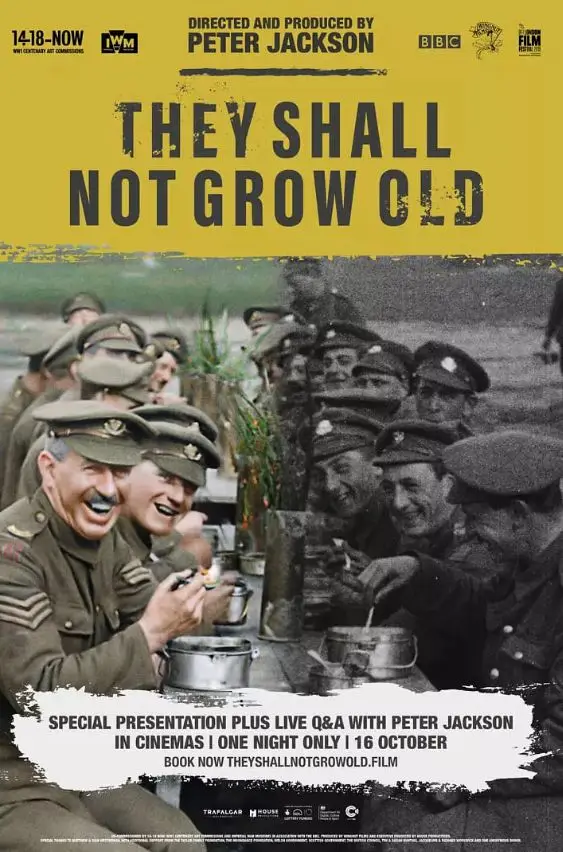
正文共计6000字左右
预计阅读时间8min
曾执导《指环王》和《霍比特人》的彼得.杰克逊再一次用技术拓展了电影表达和想象的边界。
他利用最先进的数字技术将100年前一战的影像资料修复为高清画面，不仅如此，他还对画面进行了逐帧着色、锐化，甚至转化为3D画面。
就是过去每秒10到18帧的快速画面也被制作团队处理为正常节奏的画面。
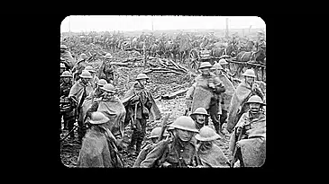
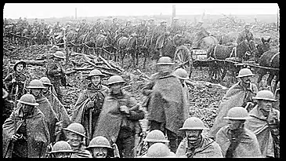
如果没有提前了解这些制作背景，直接去看《他们已不再变老》，还以为这是刚拍的大片！
就这样，静静躺在博物馆、无人问津的老照片、老视频被彼得.杰克逊重新赋予了生命力。
这样的方式，某种程度上也是对传统纪录片的颠覆，作品本身的艺术性极大地扩展了它的纪实性，甚至成为该片纪实性必不可少的构成。
而彼得.杰克逊呕心沥血花数年的时间来制作这部电影，是因为他有着强烈的一战情结，彼得.杰克逊的祖父在一战负伤并最终因此殒命：
“我和爸爸一起长大，从小就听他讲祖父的故事。我自己也是一战的孩子，我父亲在那之后移民到新西兰，遇见了我母亲。”
因此，这部作品对他来说是学习和了解祖父经历的过程，因为相比于有着丰富资料和不断反思的二战，大家对一战记忆就有些模糊，甚至存在很多错误的理解。
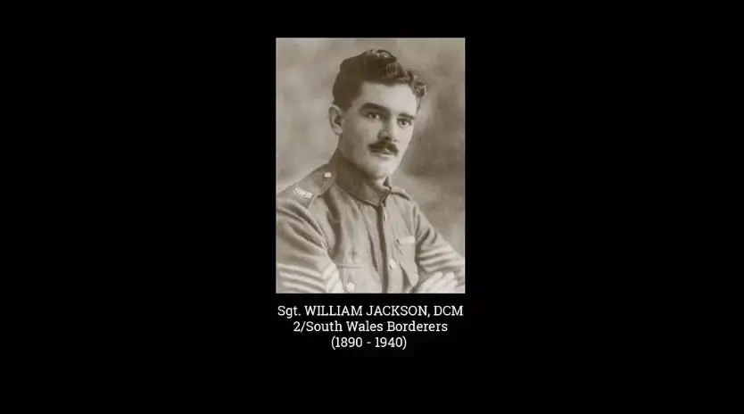
△导演的祖父，因一战负伤，1940年去世
为了更加真实的呈现一战，彼得.杰克逊并没有刻意选择某一场戏剧化的战事，也没有重点去挖掘富有传奇色彩的大人物，而是将目光放在了普通士兵的身上。
毕竟，亲自上战场拼命的正是这些普通士兵，他们最有发言权，但这些声音却常常因为观众的“英雄情怀”和“猎奇心态”而被忽视。
因此，这部电影并不是什么哗众取宠、故意博人眼球的跳梁小丑，而是本着尊重历史、还原真相的严肃态度制作的。
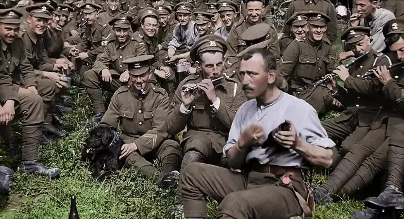
前期准备中，制作团队听了200个士兵的近600个小时的访谈资料，看了100个小时的影片资料。
而光是做完这一步，就花了整整一年！
正是这样的良心之作，让人类埋藏一百多年、有血有肉的战争记忆喷涌而出，电影也大受好评，豆瓣评分高达9.0。
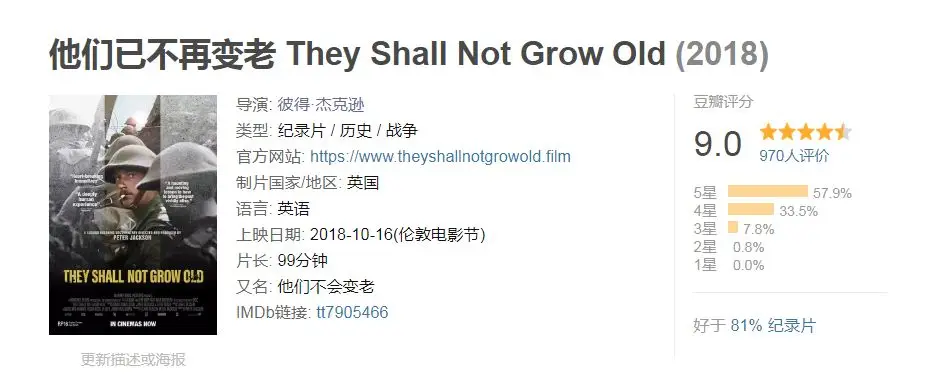
-01- 参战
这场战争的开始就是极其荒谬的。
1914年6月，萨拉热窝事件爆发，塞尔维亚国庆日上奥匈帝国皇位继承人斐迪南大公夫妇被一个青年枪杀。
远在不列颠群岛上的英国人一边好奇地听着广播，一边若无其事地聊天，丝毫不觉得这件发生在遥远他乡的事情会对自己有什么影响。
可两个月后，英国便向德国宣战。
这个突如其来的消息让很多人不知所措，一个士兵回忆
“当时我们在和德国人踢足球比赛，接到消息后，我们不知道该怎么面对眼前的德国人，是要立马拿刀刺向他们吗.......后来我们讨论决定继续和对方踢球，毕竟宣战是从明天起才生效的”。
可见，国家的立场并不一定是人民的立场。
而当战争动员和宣传不断推进时，年轻人的参战热情逐渐高涨。
对于很多年轻人，战争不仅是保家卫国的正义之战，更是关乎勇气的考验，能够参战去痛击德国佬是人生一大快事。
就这样，他们怀着对战争的浪漫想法踊跃报名参战。
就是父母的苦苦哀求也无法阻挡年轻人参军的步伐，毕竟没有人想错过这场冒险，没有哪个男子汉愿意被人骂为缩头乌龟。
就是未成年人都虚报着自己的年龄积极参战，军队也很乐意接受这样的新兵蛋子，甚至还会暗示他们虚报年龄以通过审核。
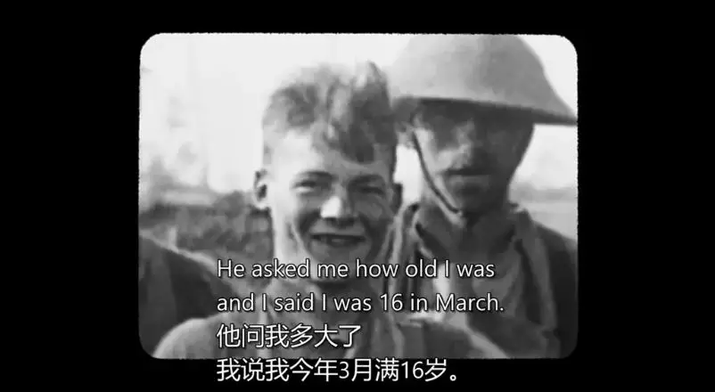
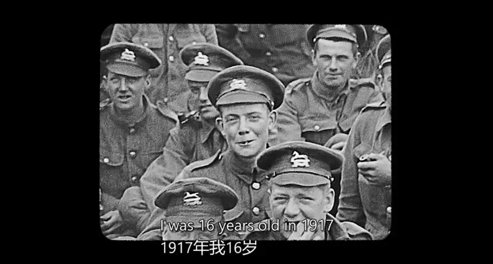
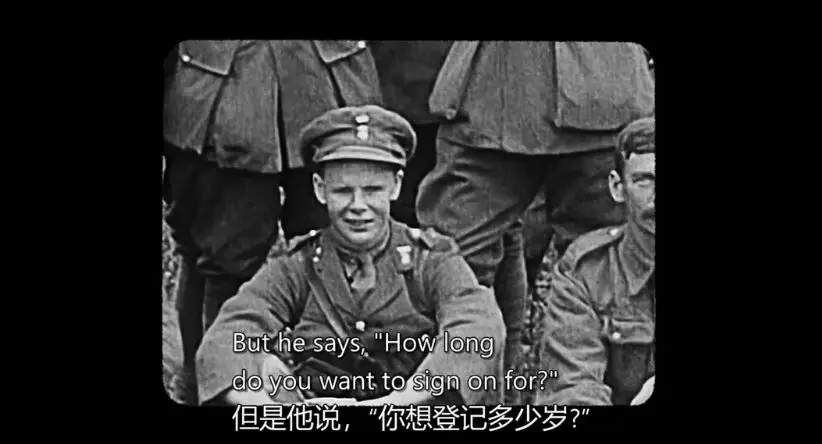
当大家从平民生活踏入到军队中时，要学会的第一个功课就是服从命令。
因为物资匮乏，很多人穿的衣服和鞋子并不合身，当一个士兵向军官抱怨时，军官淡定地告诉他：没有不合适的鞋，只有不合适的脚。
因此，他们只能服从，只能适应艰苦的条件和严厉的训练，要背着负重五十公斤左右的装备行军几十公里。
那些笨重的军靴折磨着他们的脚板和脚踝，有些人痛的泪流不止，他们为了让靴子软一些，会往里面撒尿放一晚。
一段时间的训练后，大家已经适应了这样的生活，体格也变得更加强健。
更重要的是，他们学会了组装机枪，学会了在一分钟内将十发子弹全部打到目标上的本领，学会了大声嘶叫着将刺刀又快、又狠地刺入敌人要害。
周六休息、周日一起去教堂礼拜，彼此之间也建立了深厚的友谊。
6个月的训练足以让这些新兵蛋子变成一个合格的士兵，大家摩拳擦掌，就等着上级一声令下便立马赶往前线、不负此生。
-02- 煎熬
终于，他们接到命令要前往海外战场，但是目的地保密。
这倒无所谓，他们一心只想着打德国人，不论到哪里只要可以打德国人就可以。
甚至有人担心自己还没来得及上战场，战争就结束了，有了命令这下终于可以放心了。
大家兴高采烈奔赴战场，没有一个人流泪，甚至有些人已经做好回不来的心理准备，将遗言写在明信片上从火车窗户丢出，希望捡起来的有心人能够将它送到家人那里。
大义凌然，欣然赴“会”，就是九死一生也在所不惜。
这就是这些年轻人奔赴战场时的状态。
当他们一路南下，一直走到距离前线战壕大约32公里的地方时，交火声越来越响，远处传来的炮声让他们激动不已。
他们知道，前线就在眼前了。
可当他们亲眼目睹了被战火摧毁的城镇和村庄，看到被拦腰炸断的树木，无数的弹孔，那种破败和荒凉是他们之前永远无法想象的，让人觉得非常怪异。
他们好奇地问从前线退下来的士兵“战场是怎么样的”。
他们几乎得到的是同一个答案“糟透了”。
这种负能量并没有影响大家的士气，毕竟大家是怀着赴死的心态而来，怎么可能没有亲身经历就打退堂鼓呢。
他们继续前行，当大家进入战壕的时候，黑白的画面变成了彩色画面，真真实实的战场将会呈现在所有人的面前。
战壕里最直观的感受就是这里的生活气息非常浓，挂着大衣的木桩、装着茶的饭盒、放着毯子的防空洞、用沙袋堆成的床。
往远处望去，他们与德军中间隔着一片无人区，对面都是些恶魔，一看到你就会给你一枪。
双方用铁丝网互相隔离防范，上面还挂着一具具无人敢收的尸体。
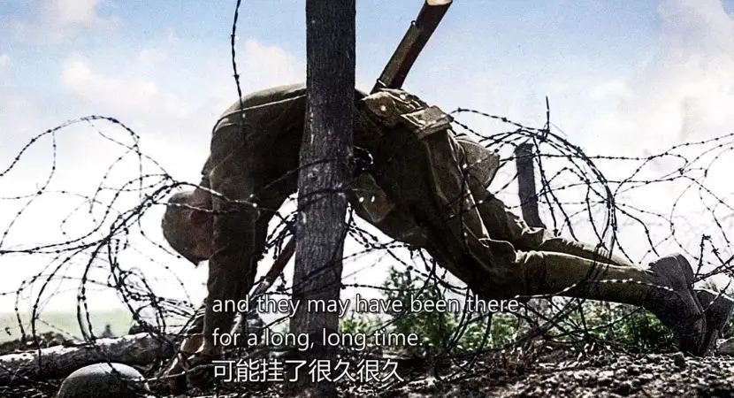
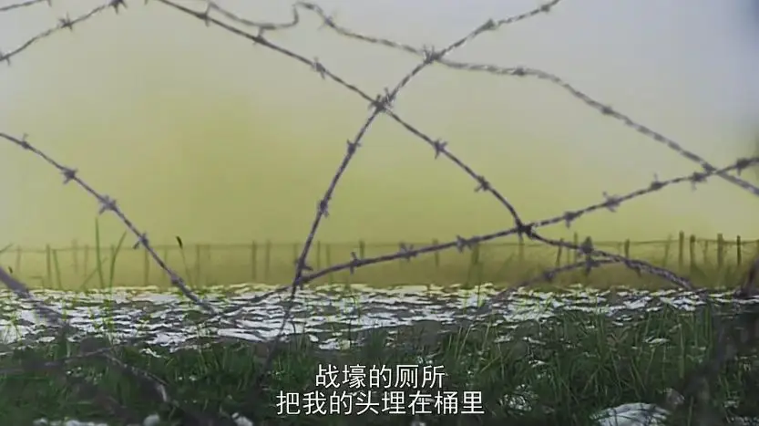
这里可以说是世界上最荒凉的地方之一，看不到一点生命的迹象。
在战壕中，每个人都要格外小心，因为一不小心你就会被敌人狙击，一个士兵回忆，“一天，我正在和一个家伙说话，忽然扑通一声，那位朋友的头像鸡蛋一样碎了.....”
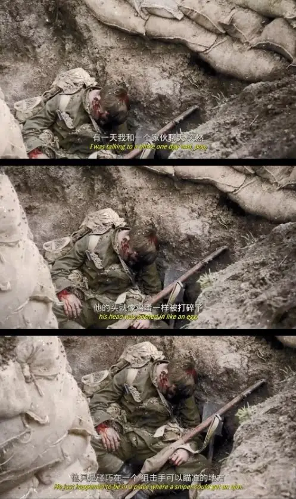
如此危险的形势下，三分之一的人站岗、三分之一的人维护，剩下三分之一的人睡觉休息，然后轮换。
没有床，就倒地睡下，因为战壕中有积水，他们便挖个洞，睡在里面。
他们很会苦中作乐，当时用的机枪是水冷武器，如果连续开枪，里面的水会沸腾，这时，他们便可以拆开枪管用沸水泡茶喝。
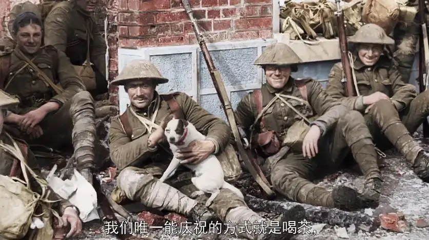
有些人喝了弹坑里的积水会而染上痢疾，因为弹坑下面有死尸。
战场上没有厕所，他们便挖条沟，支一根杆子架在上面，然后在上面蹲坑。
杆子上有时候会蹲很多人，要是不走运，杆子压断了，他们就光着屁股掉进了粪坑中。
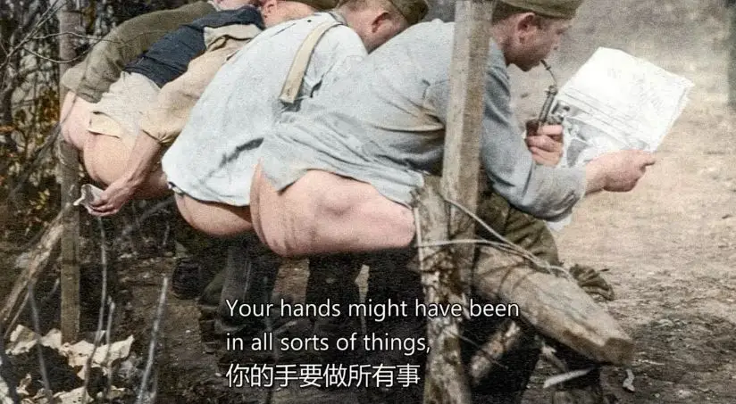
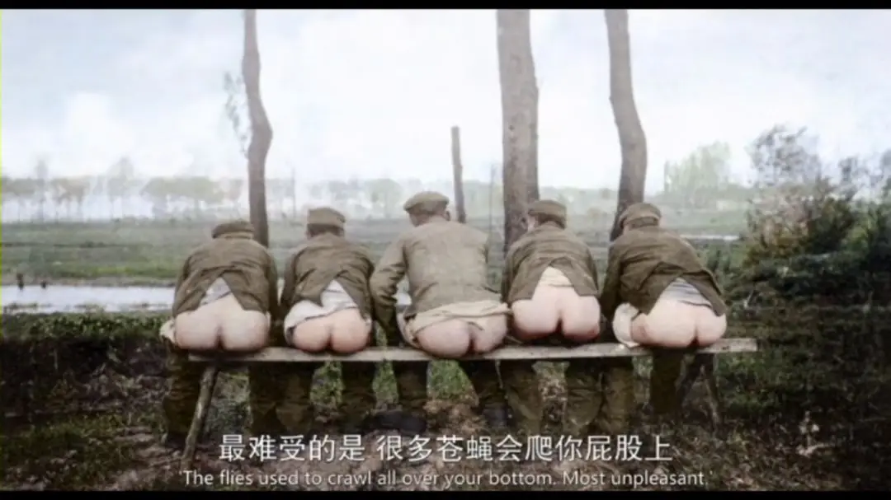
因此，战场上是毫无个人隐私的。
因为没有办法换洗，他们身上会染上虱子，为了杀死这些虱子，他们将衣服放在火上烤，能听到虫卵爆开噼里啪啦的声音。
无处不在的不仅有虱子，还有接连不断的炮击声，这给每一个士兵带来很大的精神压力。
因为你不知道这一枚炮弹是不是会落在你头上，就是几十米外的炮弹也会有两百多克又红、又烫的碎铁片呼啸而来，一旦被击中也是非死即伤。
他们每天都会目睹上一秒还在有说有笑的朋友下一秒却被炸成一堆碎尸。
听到轰鸣声，所有人的坚强会立马崩塌，吓得一头扎进泥堆里。
空气中弥漫着死亡的气息，满地的碎尸、糟糕的腐臭，那种恶臭味比死老鼠的味道恶心上百倍，吃东西的时候，那种气味就在你的嘴边。
这就是阵地战前线的真实环境。
这场战役非常胶着，一直从夏天持续到冬天，随着天气变得越来越恶劣，战壕里积了越来越多的水，直至变成水沟。
这些冰冷入骨的水弥漫在士兵的脚边，高筒靴子里都灌满了水，到了第二天早上，脚已经被严重冻伤，甚至靴子脱都脱不下来。
被冻伤的士兵不得不从前线退下来，为了保命，整条腿都要被锯掉。
几个月下来，之前所有对战争的浪漫想法都已经烟消云散。
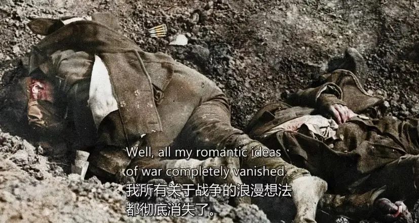
当时的环境仿佛已经完全和文明社会脱节，他们在泥淖中生活，那样堕落，那样孤立！
他们都开始对兔子有了同情，因为感动身受，他们就像兔子一样被人猎杀。
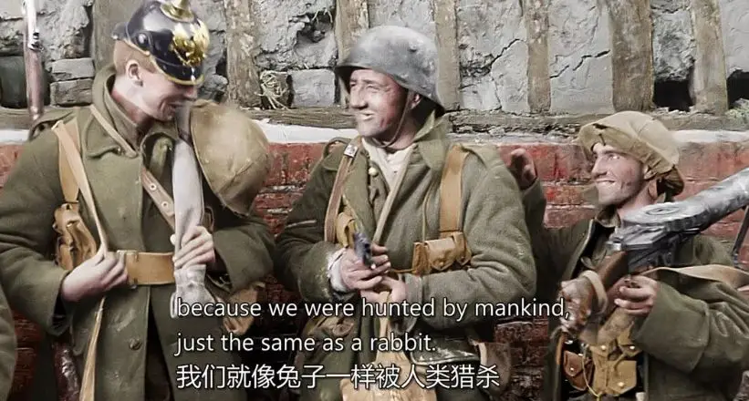
就是铁了心要杀的德国人，他们的看法也变了。
一个士兵回忆“在一场偷袭中，我用一把枪打中了他，我的酒壶总是满的，就给他喝了一口，我挺可怜他的”
而那个奄奄一息的德国士兵说了一句“谢谢你，酒很好”便去世了。
当他们俘虏了一些德国兵时，这是他们第一次在战场上亲自接触他们，他们发现这些德国人也非常友好，他们并非国家宣传的那样穷凶极恶，而是像自己一样的普通人。
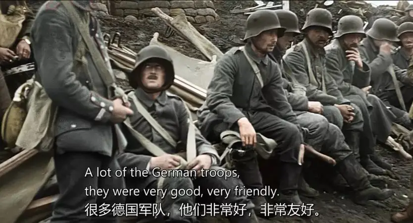
有些德国狙击手会开枪，但故意不击中人，他们用德语为自己立了牌子“上帝与我们同在”。
而同样的牌子也存在于英军之中，双方都信仰上帝，在战场上都相信着和平之君，可上级的命令却让上帝的子民互相残杀，这是多么可悲的一件事。
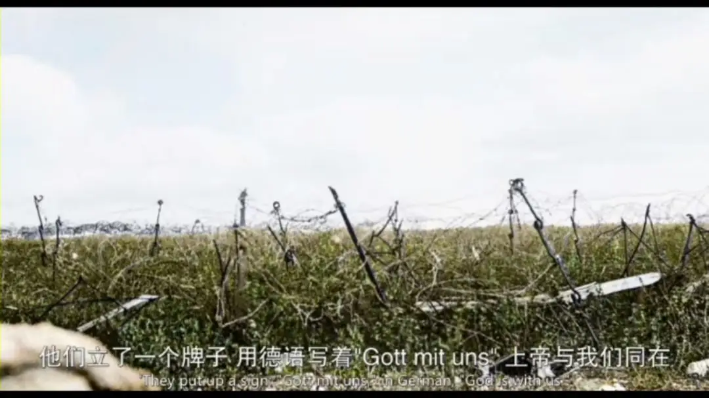
-03- 炼狱
一战后期，坦克被研发出来应用在战场上。
坦克的到来给了英法军队极大的信心，他们要集中一切力量彻底打垮德国。
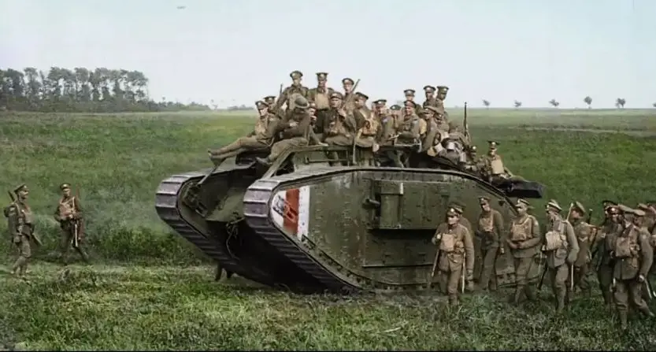
于是源源不断的弹药运往前线，战壕中士兵也挤得像个沙丁鱼罐头一样，
大家知道要有大动作了。
空气中火药味越来越浓，大家都不由随之变得紧张起来。
经过长时间的随时待命状态后，一排排大炮的发射宣告了决战的开始。
瞬间，战场上地动山摇、火光四射，旋即，德国开始反击。
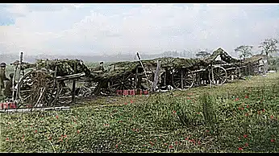
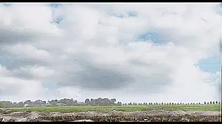
整整四个小时，士兵们等在原地，承受着一切炮火，随后320辆坦克出击。
步兵们继续待命，终于上级发命令了，让所有人将自己宝贵的私人物品上交，比说珍贵的照片、信件。
所有人都明白，没有多少人可以见到明天的太阳，这些将是他们唯一可以留给家人的东西。
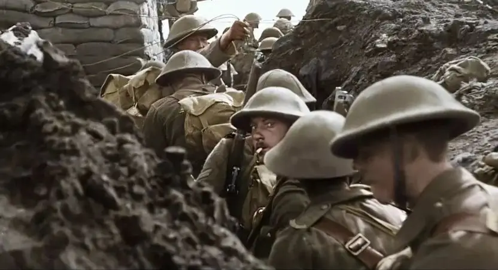
在军饷簿中，大家怀着复杂的心情将自己的遗嘱写下。
幸存的士兵回想当时的情形
我一无所有，你身边的战友就是你最好的朋友，亲密无间，哪怕前一天还不认识，到了出击前一小时，那是一生中最漫长又最转瞬即逝的时光，我们有大量的时间来思考，而且我发现自己的思考更深刻了，比以往都深刻得多......
我们意识到悲剧将要到来，要么战死，要么负伤.....
在我们身后一英里，密集排着大概一千门台炮，那么多炮弹从头顶上飞过去，还有德军火力反方向打过来。
炮火声越来越大，我从没听到过那么大的炮火声，根本听不到说话声，炮弹从大概头顶一米多的高度掠过，空气热得像地狱炼火，脑海中也是另一个炼狱，所有理智都被炸飞没了，有些士兵情绪有些失控，突然一个士兵开始大声哭起来......
天刚亮，大家喝了朗姆酒，装上刺刀，随着军官一声令下，大家爬出了战壕。
他们没有跑，也没有吼叫或者欢呼，每个人变得极其安静。
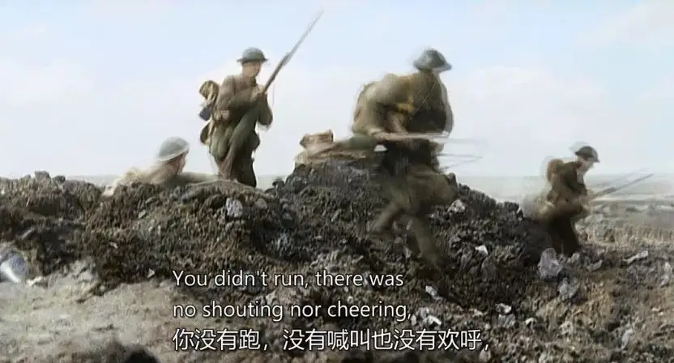
忽然，德军意识到了英法军队的全面进攻，便开始全面反击。
就这样，子弹像冰雹一样射来，有人头部中枪，有人腿上被子弹撕开一个口子，大家开始不断倒下，哀嚎、恐惧、唰唰的子弹声，置身其中脑袋一片空白仿佛世界末日来了一般。
第一波攻势下来，一个不剩，全部非死即伤！
后来的士兵则必须要踩着自己战友的尸体前进。
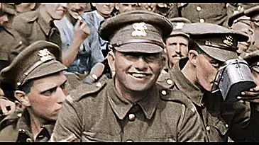
一路上到处都是死尸，有英国人也有德国人，而前行的坦克也不得不碾着尸体前行，场面惨不忍睹。
这根本就不是战争，而是一场无法用语言形容的屠杀！
一位幸存者说“一只眼睛肿胀的野兔充满恐惧地从我眼前跑过，但我觉得它还没有我一半恐惧”
当战役进入后期时，双方都打红了眼，炮弹也失去了理性，不分敌我只知道拼命扑向人群中。
一个负伤的幸存者回忆说
“子弹不停地向我们打来，弹片从头顶射下，所有的德国炮兵都向我们开火，我们自己的炮兵也在持续开火，身边不停有炸弹爆炸。
这么一场真切、激烈的战役，会彻底支配你，不剩一点理智，因为在这样的炼狱里完全没时间思考。
那种麻痹人的喧嚣，会使人反常，不管这个人曾经多么善良，所有感官只剩下没有含义的生理反应、视而不见、听而不闻。
鼻腔里灌满了硝烟和死亡，文明的表象已经消失，我被炸飞了十几米远，只听到幸存者的哭声和尖叫声，这些人的身体，有的炸掉了一块变成两段，有的三段，七零八落的胳膊腿满地都是，空气中只有爆炸的单调气味.....
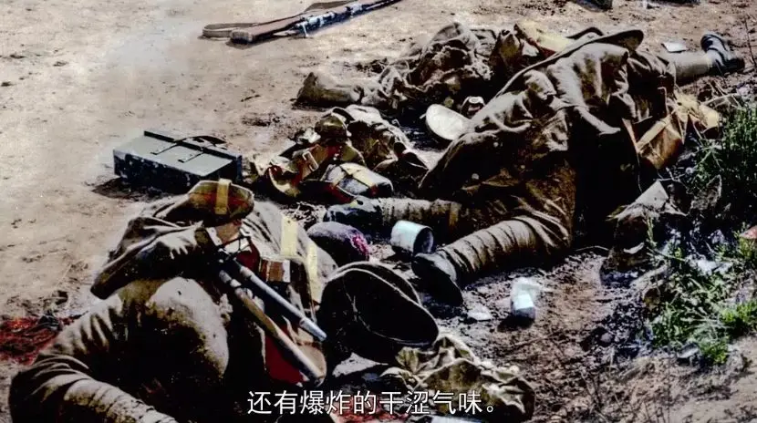
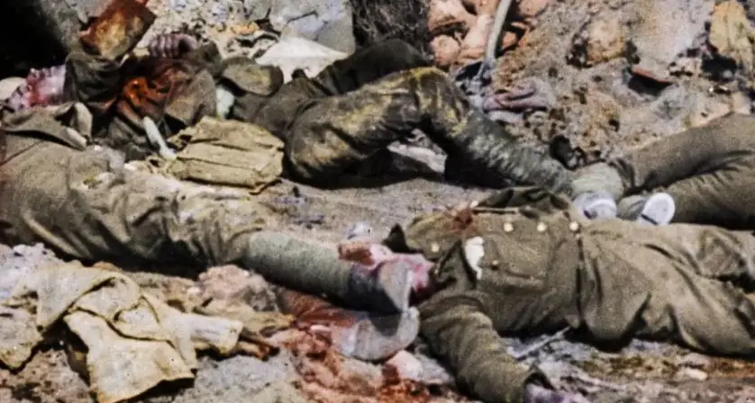
就这样，当一切归于平静时，英、法联军伤亡794,000人，德军则损失538,000人！
究竟是什么正当的理由竟要让如此多的生命付出代价。
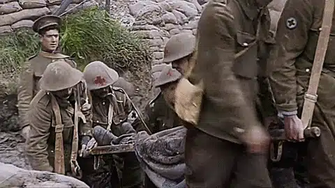
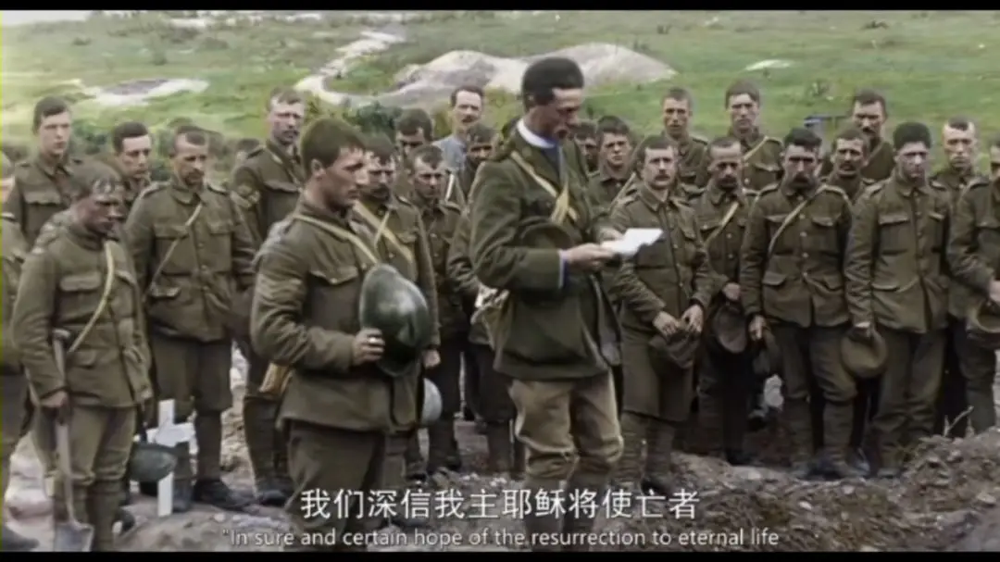
这场战役后，英、法联军俘虏了大量德国士兵，他们对这些和他们一样莫名其妙穿上军服的年轻人有着深深的同情和理解。
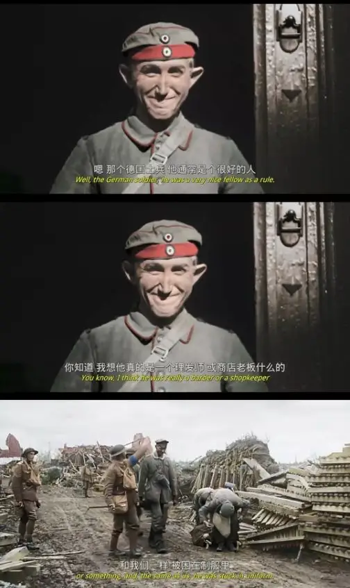
英国士兵曾经痛恨的只是宣传中的抽象德国，事实上，他们不恨任何一个具体的德国人，反而欣赏和尊重他们的勇敢。
而德国人早已经厌倦了战争，他们不在乎是否会失败，只希望战争早日结束。
他们在一起苦笑着，真不知道这场无用的战争为什么会发生。
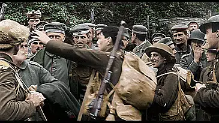
△英军和德军在一起
-04- 干枯
战争最恐怖的就是可以迅速将一个年轻的生命催老。
当德国战败、战事停息的时候，没有人欢呼，甚至没有人说话，大家陷入到一种怪异的沉静之中。
每个人看起来非常颓废，那是他们一生中最平淡麻木的时刻，一时间无法消化停战的消息。
有一种被炒鱿鱼的感觉 ，突然觉得自己变得多余。
没有欢笑、没有歌声，他们经历了太多惨剧，太精疲力尽了，他们的情感在短短的时间内被耗尽了。
这群年轻人仿佛一下子变成了垂老之人。
回到家乡后，他们觉得自己和其他正常人是完全不同的两种生物，彼此之间无法理解：
“所以我们这几百万人也不配到一句‘非常感谢’，你到野外泥地里滚了一圈回来，连礼教都丢了，还奢求什么感谢是吧！”
“普通人只知道我们回来一身的泥和虱子，但他们无法想象，坐在战壕里等炮弹落下的那种心理折磨。”
甚至有些人根本就不曾注意到他们曾出生入死参加了战争：
唯一真正惹毛我的一件事，那时我复员了，走进一家商店，店员是我认识的一个小伙子，他说：‘你最近都去哪啦？上夜班吗？
而最令他们绝望的是，其他人根本就不了解战争：
“人们无法理解战争是多么可怕的一件事，他们可能把战争看做是一段连续的骑兵冲锋。”
“刚开始战争还算合理，人们在马背上比比剑，但后来就发展出了可怕的东西，人们意识不到军事装备的威力！在战场上人的生命分文不值。”
“我们没有人是英雄。”
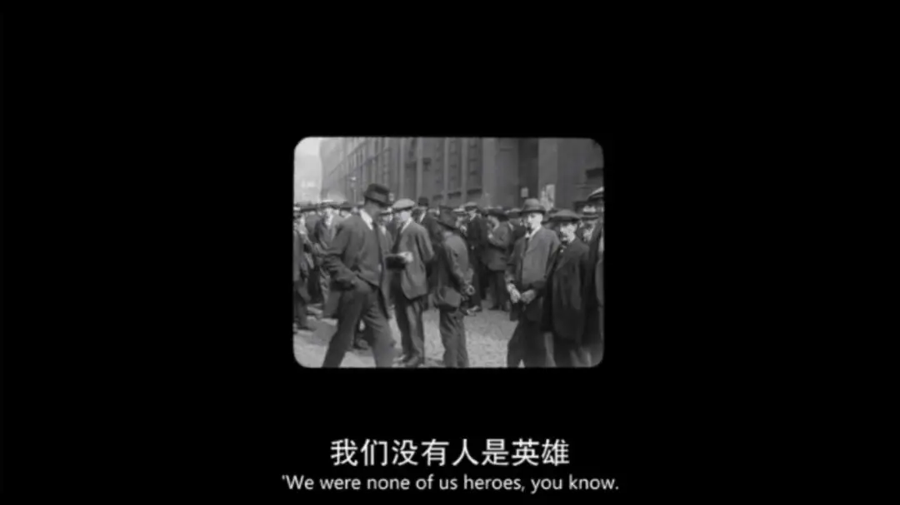
一战结束20年后，波及范围更广、更惨绝人寰的二战爆发了。
无数历史证明，人类从没有吸取教训。
为什么？
从亚当、夏娃僭越上帝的权柄走向堕落开始，人类就天生有一种不见棺材不落泪的“犯罪”冲动。
不伦所有人说战场多么糟糕，都无法阻止新兵继续步入炼狱的步伐。
不论过来人怎么对后人说前面有坑，都无法阻止他们跳入坑中的节奏。
我们缺乏顺服的智慧，因此没有领受历史教训的恩赐，更没有驾驭武器的能力。
这就是上帝对人类犯罪的咒诅！
希望这部宝贵的纪录片能够唤醒我们对于人类罪性的痛恨和对和平的珍视，我们当远离任何仇恨教育，那不仅是无耻的，还是可怕的。
最后，向大家分享一战期间（1914年9月21日）最为著名的诗歌《For the Fallen》（至逝去，另译追悼诗，劳伦斯·比尼恩写），本片的片名便取自其中的一句诗，大家可滑动查看中英文诗歌：
滑动下方
查看完整诗词
▼
带着骄傲的感恩，母亲为了的孩子，
英格兰哀悼其葬身大海。
肉体是他们的肉体，灵魂是他们的灵魂，
以此献身于自由的事业。
庄严的鼓声激励着：神圣而庄严地死去
悲痛传唱永恒之境。
这是一首凄凉之至的歌
还有光荣照亮我们的泪水。
他们歌唱着奔赴战斗，曾经青春洋溢，
坚挺的臂膀，忠诚的眼神，坚定而热烈。
他们以不可胜数的优势坚定到最后：
他们用表情击倒敌人。
他们不会变老，而我们渐渐老去：
他们不再厌倦年龄，岁月也不再受蔑视。
在日落和日升之时
我们将追念他们。
战友的笑声使他们再次走在一起；
他们坐在家里却感觉桌子不亲密；
他们不像我们我们有更多的劳动时间；
他们沉睡于在英伦之外。
但是，我们的渴求和我们的希望同样深刻，
感觉的源泉，那就是隐藏的景象，
他们懂得保留心灵深处的土地
就如星星出现在夜晚；
当我们化为尘埃，就像星星一样明亮，
游弋在不列颠边界神圣的平原之上；
当星星布满我们的黑暗的时代，
直到永远，他们永存。
英文原版：
With proud thanksgiving,a mother for her children,
England mourns for herdead across the sea.
Flesh of her flesh theywere, spirit of her spirit,
Fallen in the cause ofthe free.
Solemn the drumsthrill: Death august and royal
Sings sorrow up intoimmortal spheres.
There is a music in themidst of desolation
And a glory that shinesupon our tears.
They went with songs tothe battle, they were young,
Straight of limb, trueof eye, steady and aglow.
They were staunch to the end against odds uncount ered:
They fell with theirfaces to the foe.
They shall grow notold, as we that are left grow old:
Age shall not wearythem, nor the years contemn.
At the going down ofthe sun and in the morning
We will remember them.
They mingle not withtheir laughing comrades again;
They sit no more atfamiliar tables at home;
They have no lot in ourlabour of the day-time;
They sleep beyondEngland's foam.
But where our desiresare and our hopes profound,
Felt as a well-springthat is hidden from sight,
To the innermost heartof their own land they are known
As the stars are knownto the Night;
As the stars that shallbe bright when we are dust,
Moving in marches uponthe heavenly plain;
As the stars are starryin the time of our darkness,
To the end, to the endthey remain.
这里没有挑逗你眼目情欲的小鲜肉
也没有挑动你肉体情欲的段子
更没有膨胀你今生骄傲的鸡血
我们只在乎那些最质朴真诚的作品
在那里我们才能恢复真正的想象力
我们也坚信这才是我们真正需要的

ID:Six_hundred_hits
长按二维码，一键关注
【六百击】
-END-
电影评论
尽情分享朋友圈

苹果打赏通道
小提示：文末广告是腾讯配送广告，内容与本号无关，但您的每次点击（无需反复点）都会给平台带来几毛收益，欢迎您点击支持六百击。